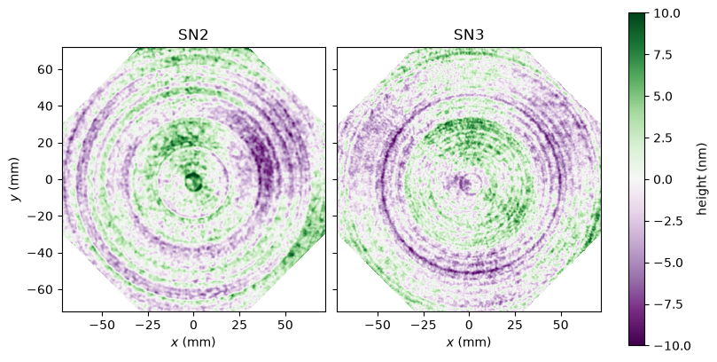
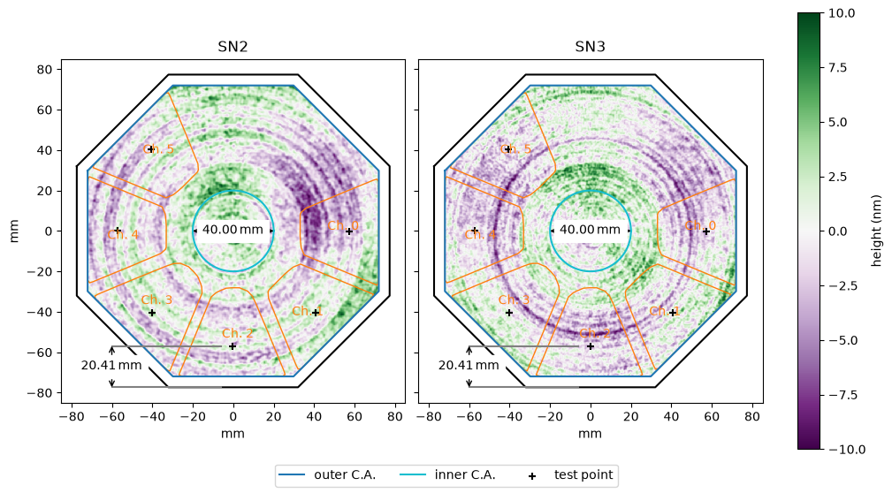
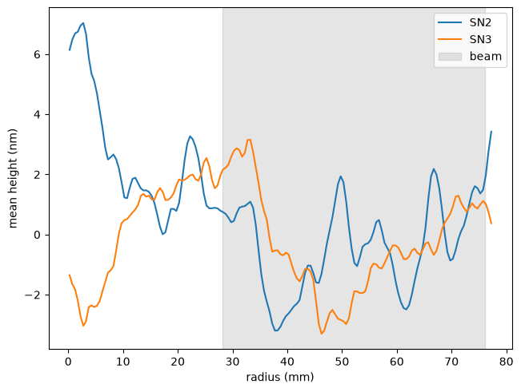

Primary Mirror#
Optimax Systems polished two primary mirrors for ESIS-II, serial numbers SN2 and SN3, and measured the figure of each with a Nanomefos profilometer in September 2026. Which of them will fly is not decided yet. This report shows those measurements, and where the beam of each channel falls on them.
The measurements are in the metrology-v1.0 release of
esis-data-f2,
and esis.flights.f2.optics.primaries.figures.figure_measurement()
downloads them the first time they are needed.
[1]:
import numpy as np
import matplotlib.pyplot as plt
import astropy.units as u
import astropy.visualization
import pandas
import named_arrays as na
import esis
Figure#
Load the map of the figure of each mirror. Each is the height of the surface relative to a paraboloid, with piston, tilt, and power removed, on a grid of pixels 0.25 mm apart which covers the clear aperture of the mirror.
[2]:
serial_numbers = ["SN2", "SN3"]
figures = {
serial_number: esis.flights.f2.optics.primaries.figures.figure_measurement(
serial_number,
)
for serial_number in serial_numbers
}
Plot both maps, with \(x\) to the right and \(y\) up, as Zygo’s software shows them. The comment in the header of each file says that the mirror was measured with its fiducial at 6 o’clock.
[3]:
kwargs_map = dict(
cmap="PRGn",
vmin=-10,
vmax=10,
)
with astropy.visualization.quantity_support():
fig, axs = plt.subplots(
ncols=len(serial_numbers),
sharey=True,
figsize=(8, 4),
constrained_layout=True,
)
for ax, serial_number in zip(axs, serial_numbers):
figure = figures[serial_number]
mappable = na.plt.pcolormesh(
figure.inputs.x,
figure.inputs.y,
C=figure.outputs.to(u.nm).value,
ax=ax,
**kwargs_map,
)
ax.set_aspect("equal")
ax.set_title(serial_number)
ax.set_xlabel(f"$x$ ({ax.get_xlabel()})")
axs[0].set_ylabel(f"$y$ ({axs[0].get_ylabel()})")
fig.colorbar(mappable.ndarray.item(), ax=axs, label="height (nm)")

Print the RMS and the peak-to-valley of the height of each map over the clear aperture of the mirror.
[4]:
statistics = pandas.DataFrame(
{
"RMS (nm)": [
np.sqrt(np.nanmean(np.square(figures[s].outputs))).ndarray.to_value(u.nm)
for s in serial_numbers
],
"PV (nm)": [
(np.nanmax(figures[s].outputs) - np.nanmin(figures[s].outputs))
.ndarray.to_value(u.nm)
for s in serial_numbers
],
},
index=serial_numbers,
)
print(statistics.round(2))
RMS (nm) PV (nm)
SN2 2.85 22.65
SN3 2.75 20.39
Footprint of the Beam#
Which parts of the mirror the light falls on depends on how the mirror is turned about its axis in the instrument, which is not decided yet either. To see one possibility, draw the footprint of the beam over each map, as in the footprint diagram of Design & Specifications. Start from the full ESIS-II design, with a dense grid of rays which goes almost to the edges of the field of view and of the pupil.
[5]:
instrument = esis.flights.f2.optics.design(num_distribution=0)
instrument.field = na.Cartesian2dVectorLinearSpace(
start=-0.99,
stop=+0.99,
axis=na.Cartesian2dVectorArray("fx", "fy"),
num=11,
)
instrument.pupil = na.Cartesian2dVectorLinearSpace(
start=-0.99,
stop=+0.99,
axis=na.Cartesian2dVectorArray("px", "py"),
num=41,
)
Draw the mirror turned by 22.5 degrees about its axis, so that the edges of its clear aperture are horizontal and vertical like those of the maps, and by 180 degrees about the \(y\) axis, so that it is seen from the front. The maps are taken to be seen from the front too.
[6]:
transformation = na.transformations.Cartesian3dRotationY(
180 * u.deg
) @ na.transformations.Cartesian3dRotationZ(22.5 * u.deg)
Plot the footprint of each channel over each map. The mirror would still fit the clear aperture if it were turned by any multiple of 45 degrees, and each of those turns would put the channels on different parts of the map.
[7]:
with astropy.visualization.quantity_support():
fig, axs = plt.subplots(
ncols=len(serial_numbers),
sharey=True,
figsize=(10, 5.5),
constrained_layout=True,
)
for ax, serial_number in zip(axs, serial_numbers):
figure = figures[serial_number]
mappable = na.plt.pcolormesh(
figure.inputs.x,
figure.inputs.y,
C=figure.outputs.to(u.nm).value,
ax=ax,
**kwargs_map,
)
instrument.schematic_primary(
ax=ax,
transformation=transformation,
)
ax.set_aspect("equal")
ax.set_title(serial_number)
fig.colorbar(mappable.ndarray.item(), ax=axs, label="height (nm)")
fig.legend(
*axs[0].get_legend_handles_labels(),
loc="outside lower center",
ncols=3,
)

Rings#
Both maps show rings about the center of the mirror. Unlike the rest of the figure, these do not depend on how the mirror is turned. Average the height of each map over azimuth, in rings 0.5 mm wide.
[8]:
edges = na.linspace(0, 77.5, axis="radius", num=156) * u.mm
profiles = dict()
for serial_number, figure in figures.items():
radius = figure.inputs.length
measured = np.isfinite(figure.outputs)
total = na.histogram(
radius,
bins=edges,
weights=np.where(measured, figure.outputs, 0 * u.nm),
)
count = na.histogram(radius, bins=edges, weights=measured)
profiles[serial_number] = total.outputs / count.outputs
Find how far from the center of the mirror the beam reaches, from the rays which reach the sensors.
[9]:
system = instrument.system
primary = instrument.primary_mirror.surface
rays = system.raytrace().outputs
unvignetted = rays.unvignetted[{system.axis_surface: ~0}]
rays = rays[{system.axis_surface: system.surfaces_all.index(primary)}]
position = primary.transformation.inverse(rays.position)
radius_beam = np.where(unvignetted, position.xy.length, np.nan)
radius_beam_min = np.nanmin(radius_beam).ndarray
radius_beam_max = np.nanmax(radius_beam).ndarray
radius_beam_min, radius_beam_max
[9]:
(<Quantity 28.10811062 mm>, <Quantity 76.15808317 mm>)
Plot the average height against radius, with the range of radii which the beam covers shaded.
[10]:
with astropy.visualization.quantity_support():
fig, ax = plt.subplots(constrained_layout=True)
for serial_number in serial_numbers:
na.plt.plot(
edges.cell_centers(axis="radius"),
profiles[serial_number].to(u.nm),
ax=ax,
label=serial_number,
)
ax.axvspan(
radius_beam_min,
radius_beam_max,
color="tab:gray",
alpha=0.2,
label="beam",
)
ax.set_xlabel(f"radius ({ax.get_xlabel()})")
ax.set_ylabel(f"mean height ({ax.get_ylabel()})")
ax.legend()

Finish#
The archive also holds two fields of the finish of each mirror,
measured with a Zygo NexView white-light interferometer through its 1.4X and
20X objectives,
which esis does not load yet.